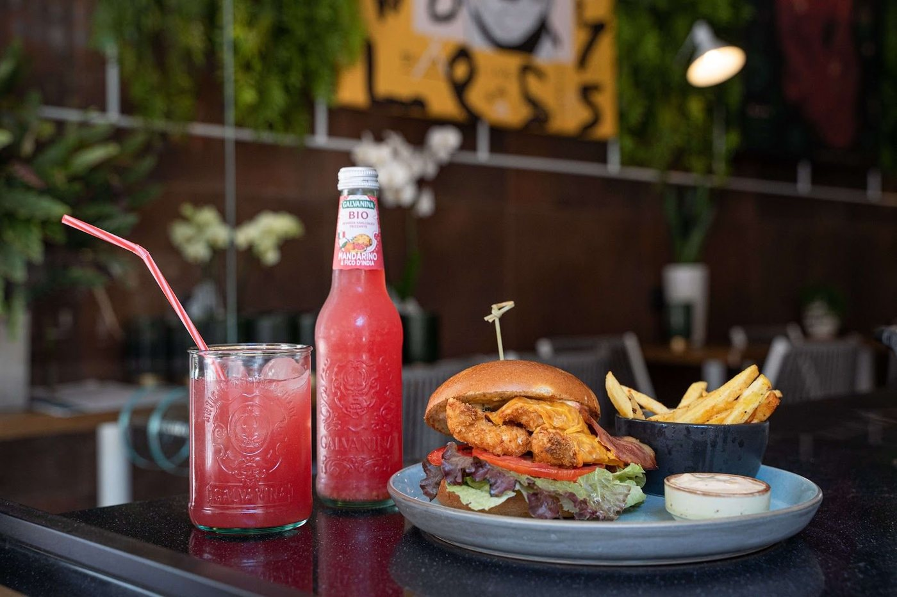
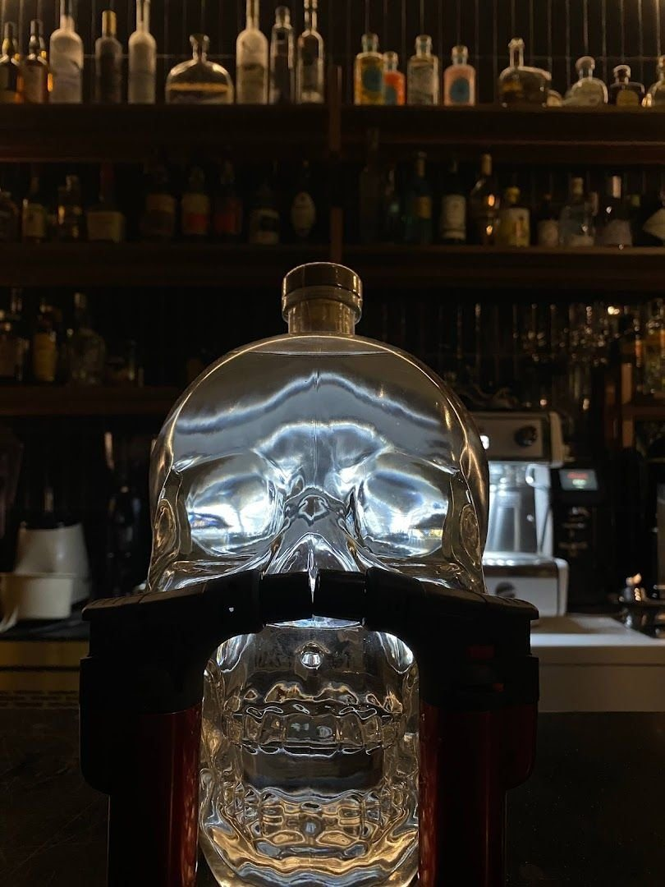

Kos-stad
Midden in het centrum van Kos-stad vind je Umbra Café & Cocktail Bar, een all-day café waar je overdag terechtkunt voor koffie, brunch of een hapje eten en waar het later op de dag tijd is voor een drankje of cocktail.
Het leven bij Umbra speelt zich vooral buiten af, op het terras.

Umbra is niet alleen populair bij toeristen, maar ook bij veel lokale inwoners van Kos, wat zorgt voor een gezellige, levendige sfeer. Op de cocktailkaart staan verschillende cocktails, van bekende klassiekers tot kleurrijke en fruitige varianten. Een leuke plek om met vrienden af te spreken, even bij te praten of je avond in Kos-stad te beginnen.

In het weekend is er af en toe een DJ, waardoor de sfeer net wat extra's krijgt, zonder dat het meteen een nachtclub wordt. Door de centrale ligging is Umbra bovendien een mooie tussenstop tijdens een avondje uit in het centrum.
Adres
Vasileos Pavlou 15A, Kos-stad
Telefoon
Openingstijden
Openingstijden kunnen seizoensgebonden wijzigen.